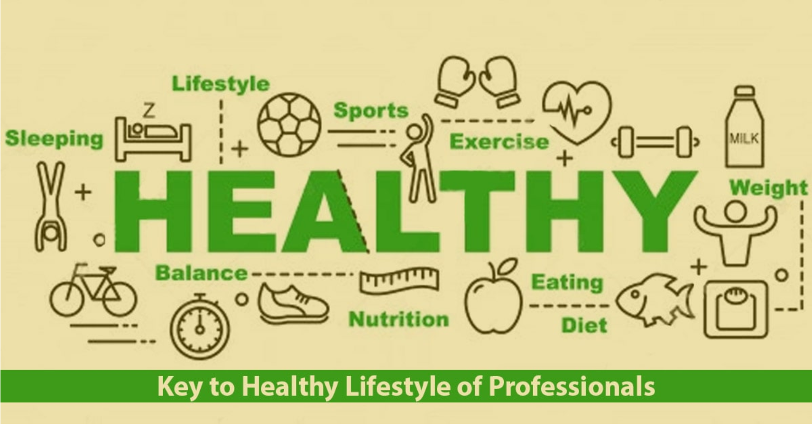

Living a healthy lifestyle means eating nutritious foods, staying physically active, getting enough sleep, and managing stress. As a teenager, you are in a unique stage of growth and development, which makes it even more important to adopt these habits. Skipping meals, choosing fast food over home-cooked meals, and spending too much time on screens might be holding you back from feeling your best.
You must make conscious choices to fuel your body with the right nutrients. Begin your day with a wholesome breakfast to maintain your energy levels and concentration. Swap sugary drinks for water or natural juices and opt for whole foods over processed ones. Trust us—it makes a world of difference!
Think about your future self: do you want to deal with health issues like obesity, fatigue, or low energy? Start small. Add an extra serving of vegetables to your plate, take a 15-minute walk after meals, and aim for 8 hours of sleep each night. Your body will thank you!
Worldwide, over 340 million children and adolescents aged 5-19 were overweight or obese in 2016, according to the World Health Organization (WHO).
• Poor Diet Choices: Are you reaching for chips and soda instead of fruits or yogurt? These poor choices add up. Foods high in sugar and unhealthy fats not only lead to weight gain but can also drain your energy and affect your focus. Excess sugar in the diet leads to increased insulin production, which promotes fat storage in the body. This process can also contribute to inflammation, leading to chronic conditions like type 2 diabetes.
You can prepare your own healthy snacks like trail mix or fruit smoothies. It’s quick, easy, and tastes amazing. Remember, what you eat today shapes your body and mind tomorrow!
In the United States, nearly 1 in 5 children and adolescents (19.3%) are affected by obesity, according to the CDC.
• Lack of Physical Activity: Spending hours gaming or scrolling through social media? You’re not alone, but being active is key to staying healthy. Just 60 minutes of physical activity a day can work wonders—play a sport, dance to your favorite music, or go for a jog with friends. Make it fun!
Physical activity not only burns calories but also increases metabolism, helping your body to burn fat more efficiently. For instance, running can burn 600 to 1000 calories per hour depending on intensity and body weight. A combination of cardio and strength exercises is ideal for keeping your body lean and healthy.
Try setting small goals, like taking the stairs instead of the elevator or biking to school. Every little bit helps, and soon you’ll notice how much stronger and more energetic you feel.
Globally, 81% of adolescents aged 11–17 are insufficiently physically active, as per WHO data.
• Stress and Mental Health: Did you know that stress can lead to overeating or unhealthy eating habits? Stress triggers the release of cortisol, a hormone that can increase appetite and cravings for sugary or high-fat foods. Prolonged stress can lead to weight gain and a weakened immune system.
Managing stress through activities like mindfulness, yoga, or talking to someone you trust can help reduce its negative impact on your eating habits. It’s essential to learn how to cope with stress in healthy ways, especially during the challenging teenage years.
According to the American Psychological Association, nearly 70% of teens report feeling stressed regularly.
Imagine feeling energized all day, acing your exams, and performing your best in sports. Proper nutrition is the secret. Eating a balanced diet with whole grains, lean proteins, fruits, and vegetables gives your body the fuel it needs to thrive.
On the flip side, poor nutrition can lead to serious consequences like obesity, fatigue, and even chronic diseases such as diabetes and heart issues later in life. Think about this: by making healthier choices now, you can avoid these pitfalls and build a strong foundation for your future.
Eating well supports cognitive functions, leading to better concentration and memory, which are essential for school performance.
World Health Organization. “Obesity and Overweight.” 2021. www.who.int.
Centers for Disease Control and Prevention. “Childhood Obesity Facts.” 2022. www.cdc.gov.
Global Nutrition Report. “2020 Global Nutrition Report.” globalnutritionreport.org.
European Association for the Study of Obesity. “Childhood Obesity.” www.easo.org.
National Institute of Diabetes and Digestive and Kidney Diseases. “Overweight and Obesity Statistics.” www.niddk.nih.gov.
Harvard School of Public Health. “The Nutrition Source.” www.hsph.harvard.edu.